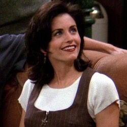

Friends is an American television show, broadcasted from 22 September 1994 to 6 May 2004, for about 10 years!It is one of the most popular
Americen TV show. It contained with 10 successful seasons.It is about a friendship between 6 people and the funny story which happened
when they pursuing their dreams
| Characters' images | Characters' names | Cast | Characters' images | Characters' names | Cast |
|---|---|---|---|---|---|
| Rachel Green | Jennifer Aniston | Chandler Bing | Matthew Perry | ||
|  | Monica Geller | Courteney Cox | Joey Tribbiani | Matt LeBlanc | |
| Phoebe Buffay | Lisa Kudrow | Ross Geller | David Schwimmer |